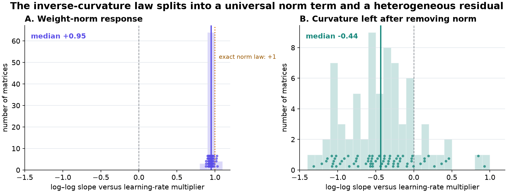

What sets layerwise sharpness in Muon?
Candidate mechanisms, ranked by explanatory compression · 30 August 2026
Changing a Muon matrix's learning rate changes the curvature that the matrix later occupies. The aggregate response is simple; the response of an individual matrix is not. This page states the measurements that any explanation must fit, then ranks ten candidate mechanisms by how much they explain with one idea.
The empirical problem has split in two. A nearly universal weight-norm response explains most of the inverse relation between learning rate and measured curvature. The remaining quantity, curvature multiplied by squared weight norm, varies strongly across matrices. A useful theory must explain that residual and predict how momentum changes it.
The observations to explain
The measurements below come from NanoGPT training with AdamW on the embedding and language-model head and Muon on the hidden weight matrices. A learning-rate intervention starts several continuations from one saved training state and assigns different learning-rate multipliers to otherwise identical copies.
Across three saved training states, multiplying the learning rate by s changes the median per-matrix curvature approximately as s−1.2. The relation is reproducible even though the model is at a different point in training.
Individual matrices also respond strongly, but their fitted exponents range roughly from −2.1 to −0.95 and correlate weakly across saved states. The smooth median hides real matrix-to-matrix heterogeneity.
Curvature levels are highly reproducible across saved states: matrices that are sharp relative to their peers tend to remain sharp. Matrix type explains part of this ordering, but apparently similar matrices can still differ by several measurement standard deviations.
We separately maximized Hessian curvature over a simultaneous perturbation of all Muon matrices, constraining each perturbation to have operator norm at most one. This global Frank–Wolfe calibration was measured once across the learning-rate cooldown and remained approximately constant while the classical scalar threshold 2/η rose by about 3.5×. This is a global observation; it is not the per-layer quantity that the main program is trying to predict.
Curvature along the raw gradient's own direction is about 21% of the leading curvature, a stable ratio across matrices and learning rates. Along the matrix sign of that gradient it drops to near the random-direction floor, and that subspace is nearly unrelated to the leading Hessian eigenspace.
When different temporal kernels are applied to the same stored gradient history, the resulting Muon updates can have cosine similarities near 0.72–0.83 and substantially different leading singular subspaces. Matching mean gradient age, period-two response, and total white-noise gain does not determine the update.
One finite-history kernel produces a better immediate loss change than the deployed kernel from the same state. After 100–400 actual training steps, the ordering reverses and the deployed kernel is better than both candidates. The two candidate kernels can also exchange order late in the continuation.
Reducing a kernel's response to a gradient component that alternates sign every step by factors of two and four did not measurably change continuation loss. The curvature response of those runs is still being measured.
K8's improvement over bi-Maxwell replicates across seeds. Scheduling the decay of a single exponential moving average recovers only about one tenth of that gain, while K6 and K8 perform similarly at the current resolution.
Early training contains strong period-two gradient oscillation. That component disappears late in training, while components with periods around 16–40 steps remain in many reproducible planes transverse to the slowly moving gradient direction.
Duplicate Muon continuations agree closely matrix by matrix. Rare-token rows in the Adam-managed embedding are much less reproducible, even though the total loss difference between duplicate controls is only about 10−5.
Most of the inverse law is weight-norm scaling
A log–log slope records how a measured quantity changes when the learning-rate multiplier changes. A slope of +1 means that doubling the multiplier doubles the quantity; a slope of −1 means that doubling it halves the quantity.

The two slopes add because the raw curvature can be written as
The median raw-curvature slope in this late-training window is −1.39. It separates into a nearly universal −0.95 contribution from squared weight norm and a heterogeneous −0.44 contribution from R. The first candidate mechanism is therefore partly confirmed, and every other candidate now has a sharper target: explain the response of R.
Current belief. Larger learning rates reliably produce larger Muon weight norms, and larger norms mechanically reduce parameter-space curvature in scale-invariant parts of the network. This accounts for roughly two thirds of the aggregate inverse law. It does not explain which matrices have high curvature or why the residual response differs across matrices.
Ranked mechanisms
The order below rewards theoretical beauty: how many observations follow from one mechanism. It is not a probability ranking. Each entry ends with the measurement that would most efficiently raise or lower it.
- Gauge and norm equilibrium
- Adaptation to the incumbent kernel
- Closed-loop marginality at the occupied frequencies
- A cross-layer sharpness budget
- Shadow dynamics from discrete temporal weighting
- Curvature rectification by matrix sign
- Active singular-subspace geometry
- Coupling between the Adam and Muon parameter groups
- A shared equilibrium obscured by different relaxation times
- Metastable spectral states
Gauge and norm equilibrium
This mechanism explains most of the aggregate law, but the new measurement shows exactly where it stops.
A layer is scale invariant when multiplying its weight matrix W by a positive constant c leaves the network function unchanged, either directly or through a compensating normalization. Along that rescaling, the Hessian measured in parameter coordinates changes: multiplying W by c divides the measured curvature by approximately c2. Muon supplies matrix updates with a normalized spectral size, while weight decay pulls weights toward zero. Their long-run balance makes squared weight norm grow almost linearly with learning rate, so a larger learning rate produces a larger norm and therefore smaller measured curvature.
The measured +0.95 norm slope confirms this chain. The remaining variable R contains the function-space curvature and any departure from exact scale invariance; its broad response means norm equilibrium cannot be the complete theory of C1–C3.
Adaptation to the incumbent kernel
This is the most direct explanation of why the best immediate update becomes worse after deployment.
The incumbent kernel is the temporal weighting used to reach the saved training state. Repeated updates under that kernel preferentially sharpen the matrix directions it excites, while directions it rarely uses can retain easy immediate descent. A replacement kernel can rotate into those underused directions and win one step, then lose after continued training sharpens them or feeds their changes back through the network. C6 supplies the rotation; this adaptation supplies the horizon reversal in C7.
Closed-loop marginality at the occupied frequencies
Momentum may set sharpness through the stability of a feedback loop containing both the weights and the momentum buffers.
Here the plant is the local training dynamics, the controller delay is the temporal kernel, and the relay is matrix sign. Marginality means that the closed loop sits at the boundary where a repeated disturbance neither decays nor grows from one cycle to the next. The proposed condition ties curvature λ, learning rate η, and the amplitude and phase change that the kernel applies at the frequency the layer actually occupies. Different layers can occupy different frequencies or have different delays, producing C1–C3. Period-two response can be irrelevant because the live late-training oscillations have periods around 16–40 steps, explaining C8 and C10.
Gradient noise adds a stochastic version of the same mechanism. The relevant noise strength is the power that remains after temporal weighting inside the occupied frequency range, rather than total white-noise gain.
A cross-layer sharpness budget
The static global calibration may reflect redistribution of one collective mode across layers.
A cross-block Hessian term measures how changing one weight matrix alters the gradient of another. If the most unstable perturbation is distributed across many matrices, each per-matrix curvature is only one local part of a collective mode. A learning-rate intervention on one matrix can then move curvature into or out of neighboring matrices while the maximum curvature attainable by a simultaneous operator-norm-bounded perturbation stays fixed. Persistent participation in that collective mode explains C3; changing participation explains C2; conservation of the total explains C4.
Shadow dynamics from discrete temporal weighting
A kernel can improve one discrete step while changing the longer trajectory through terms that a one-step comparison cannot see.
Backward-error analysis represents a discrete update rule as the exact short-time flow of a nearby continuous dynamics. For momentum, that nearby dynamics contains corrections determined by the kernel and by the order in which changing Hessians and Muon update geometries act. The failure of two operations to commute—the result changes when their order is reversed—creates explicit correction terms over multiple steps. Two kernels can match a few scalar summaries and still differ in these higher-order terms, offering one account of C6, C7, and C9.
Muon with weight decay is dissipative, so this proposal does not assume a conserved Hamiltonian. A modified objective exists only when the inferred correction field is integrable; the safer target is a modified dynamics.
Curvature rectification by matrix sign
This mechanism directly targets the heterogeneous residual left after norm scaling.
A ratchet converts fluctuations with little or no mean into motion with a preferred sign. Matrix sign discards the magnitude of the momentum matrix while retaining a direction; weight decay supplies a slow radial return. If positive and negative directional fluctuations have unequal effects on future curvature because the loss has asymmetric third-order geometry, repeated normalized updates can pump the residual R upward at a matrix-specific rate. The universal norm equilibrium and the heterogeneous rectification efficiency would then multiply to produce the observed factorization.
Active singular-subspace geometry
Layer identity may live in the singular directions selected by matrix sign rather than in scalar curvature or gradient norm.
Matrix sign maps every nonzero singular value of its input to one, so the resulting update lies on a particular face of the operator-norm ball. The active singular subspace is the set of singular directions defining that face. Large gaps between singular values make the selected subspace stable; near-ties let small changes in momentum or learning rate switch it abruptly. Stable subspaces can encode C3, while switches can produce C2 and the direction changes in C6.
Coupling between the Adam and Muon parameter groups
The unexplained layerwise state may be imposed by the optimizer boundary rather than generated inside each Muon matrix.
Adam controls the embedding, head, and several scalar parameters; Muon controls the hidden matrices. Changes in the Adam-managed parameters alter the activation and error covariances seen by every Muon layer, while Muon changes the representation returned to Adam. This makes the network a coupled nonequilibrium system with two update geometries. Graph position and coupling to the Adam-managed parameters can then explain persistent layer identity, the global observation, and the reproducibility difference in C11.
A shared equilibrium obscured by different relaxation times
The heterogeneous exponents may partly be a measurement of speed rather than a difference in equilibrium law.
After a learning-rate change, each matrix takes time to approach its new curvature. If matrices share nearly one equilibrium relation but have different relaxation times, measuring all of them in one fixed window produces different apparent slopes. Those fitted slopes can change across saved states even while the eventual law and the persistent curvature levels remain stable. Momentum scheduling would matter because it changes relaxation, not only the final temporal weights.
Metastable spectral states
Abrupt transitions among long-lived curvature states could make a smooth per-layer law impossible.
A metastable state persists for many updates but can eventually switch to another state. Each matrix may have several such Hessian configurations; learning rate and temporally colored update noise change the transition rate among them. Persistent state occupancy explains C3, while rare switches make the fitted slopes in C2 unstable and let different kernels reverse their long-horizon ordering. The aggregate law can remain smooth because it averages many transition probabilities.
Cheapest experiments that separate the mechanisms
The order below is based on decision value per unit of compute, not the beauty ranking above.
- Finish the checkpoint arithmetic. Recompute the norm–curvature factorization at earlier saved states, and test whether singular gaps, existing cubic measurements, or distance from the Adam/Muon boundary predict the residual R.
- Use the per-matrix learning-rate continuations already in flight. Fit complete response curves to separate equilibrium from relaxation time, and measure whether intervening on one matrix moves untreated neighbors.
- Replay the closed loop. Estimate occupied frequencies, phase lag, and finite-horizon amplification from recorded states; require an out-of-sample prediction of curvature response and continuation loss.
- Measure the incumbent-basin sequence. Test whether replacement-kernel directions sharpen before their continuation loss becomes worse than the deployed kernel.
- Run new interventions only where the screens disagree. The leading options are compensated gauge rescaling, kernels matched specifically at periods 16–40, paired update/sign-reversal replays for the ratchet, and short continuations with the Adam-managed parameters frozen.
Source measurements and implementation details are retained in the project records. The ranking should change when a candidate predicts a new result; agreement with facts used to invent it is not enough.